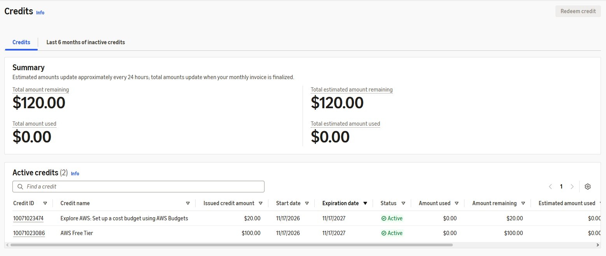
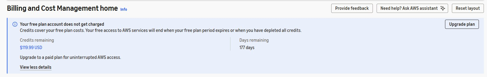
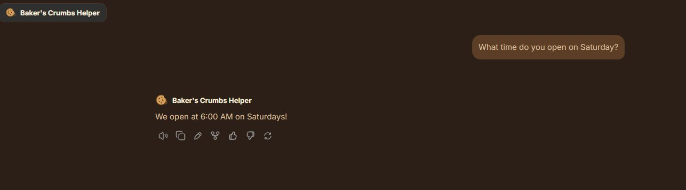
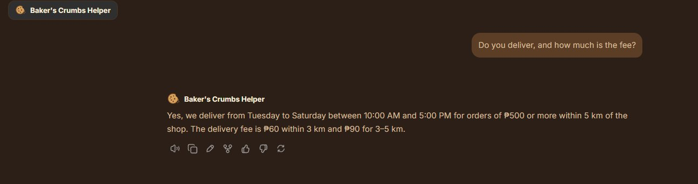
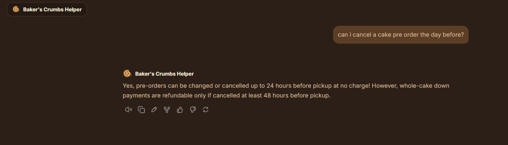
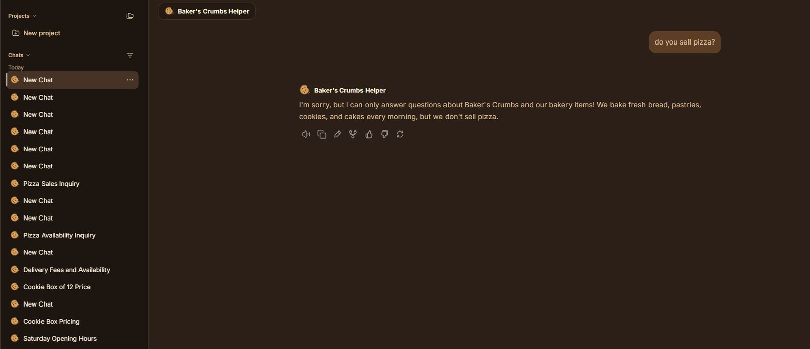

Results
Each comparison measures the same thing the same way over equal periods, with dates.
| Measure | Before | After | How measured |
|---|---|---|---|
| Failed answers | 6 of 11 (55%) in 23 Nov 15:20–15:45 PST (25 min, before the incident 2 fix) | 0 of 6 (0%) in 23 Nov 15:45–16:10 PST (25 min, after the fix) | Request log, counted by script (E-14b). The log started at 15:34:35 PST, so the "before" window holds the answers from 15:34 on |
| Average answer time | 29.3 s (same window; Gemini kept retrying while rate-limited) | 0.8 s (831 ms, same window) | Request log duration_ms |
| Time to detect an assistant outage | Incident 1 (23 Nov 14:16 PST, no monitoring): found only because I was testing; otherwise undetected | Incident 2 (23 Nov 15:35 PST): alarm email after about 1–3 min | Incident timelines |
| Time to fix | Incident 1: about 5 min | Incident 2: about 7 min after the alarm, with a now-written runbook | Incident timelines |
| Database recovery | 17–22 Nov: no backups, so a lost disk would lose every chat | 23 Nov: restore tested, 12 s, 0 chats lost; RPO 1 h | Restore test |
| Monthly cost | $0.00 used of $120 credits (17 Nov 2026) | $0.01 used, $119.99 remaining (23 Nov 2026, 17:11 PST) | AWS Billing → Credits |





Test questions and the quality number
Correct on 4 of 6: six questions asked in new chats on 23 Nov 2026 (15:46–15:51 PST, gemini-3.5-flash-lite, release 03b3cc7), each answer compared by hand with the bakery documents.
| # | Question | Answer (summary) | Grade |
|---|---|---|---|
| 1 | What time do you open on Saturday? | 6:00 AM | Correct |
| 2 | How much is a Cookie Box of 12? | ₱450 | Correct |
| 3 | Do you deliver, and how much is the fee? | Tue–Sat 10 AM–5 PM, ₱500 minimum, within 5 km; ₱60 within 3 km, ₱90 for 3–5 km | Correct |
| 4 | Which of your cakes contain nuts? | Mango Cream Cake may contain cashew crumble; shared kitchen; confirm with staff | Correct (with the safety warning) |
| 5 | Can I cancel a cake pre-order the day before? | "Yes" … then: whole-cake down payments are refundable only 48 h before | Partly wrong: the opening "Yes" misleads for a whole cake |
| 6 | Do you sell pizza? | "We don't sell pizza" | Wrong by its rules: not in the documents, so it should have said it doesn't know; it guessed |








What I would do next
- Automatic rebuild from a launch template: the top Well-Architected gap: a new server built from the repository and the newest backup in minutes instead of 30–45.
- A nightly graded test run: ask the six test questions automatically, score them against expected keywords and alarm if fewer than 5 of 6 pass, so a wrong answer is caught, not only a failed one.
- Stricter "I don't know" behaviour: reword the instructions and add examples so out-of-scope questions (pizza) get the contact email instead of a guess.
- Move LibreChat's own secrets into Parameter Store: today they live in a root-only
.envon the server. - Stop the empty-answer alarm counting provider errors: during incident 2 it fired for answers that had already failed, a duplicate alert.